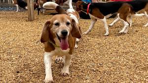
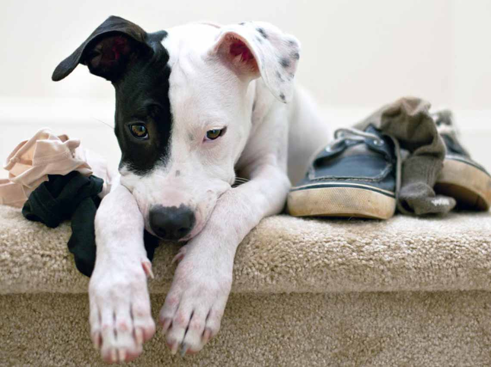

Nuestros perros
Aquí podra ver todos los perros que actualmente estan dentro del albergue Planeta Animal. En Planeta Animal tenemos como objetivo buscarle hogar a nuestros perritos, son muy pocos los que podrían darse en adopción ya que estos deben estar al 100% recuperados. Los perros que pueden ser elegidos para adoptar son perros que no tienen cancer, o de la tercera edad o alguno que tenga una enfermedad muy costosa o de difícil tratamiento.